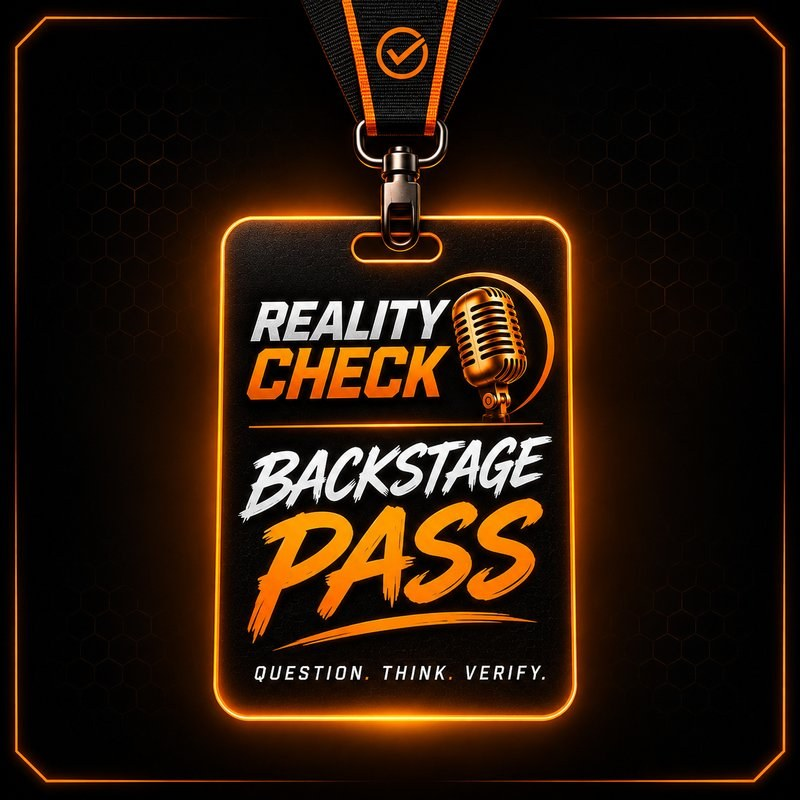

Watch Reality Check.
Every episode of the daily Web3 show in one place. Crypto, markets, NFTs, Pokémon and TCG, gaming and founder interviews. Live every weekday at 11 AM ET.

Jensen Reinstated by Nvidia and Kraken's $17K $BTC | Reality Check
Hooja on OS, Jensen reinstated by Nvidia and Kraken's $17K $BTC, live with the Reality Check crew. Plus our daily CardWall segment: Pokémon, One Piece and sports card news, prices and pulls. Today's partners: The...
Episode Library
Every episode.
 1h 34m
1h 34mJensen Reinstated by Nvidia and Kraken's $17K $BTC | Reality Check
 1h 52m
1h 52mAnthropic $ANT: Crypto Bleeds While AI Feasts | Reality Check
 1h 9m
1h 9mAnthropic $ANT and GTA 6 | Reality Check
 1h 27m
1h 27mThe Anthropic IPO and Nvidia | Reality Check
 1h 29m
1h 29mIs $60K Bitcoin Next? | Reality Check
 44m
44mIs This the Bottom for Crypto? | Reality Check
 1h 36m
1h 36mThe CardWall: Live Pokémon and Sports Card Pulls
 1h 19m
1h 19mNvidia Aftermath and a Bleeding Market | Reality Check
 1h 33m
1h 33mJensen Huang Quits Nvidia | Reality Check
 1h 18m
1h 18mCrypto Market Pain and CT News | Reality Check
 1h 19m
1h 19mCPI and Inflation Day Reaction | Reality Check
 1h 10m
1h 10mThe GVC Reveal | Reality Check
The Checkpoint
Get the daily Web3 briefing.
Crypto, NFTs, markets, gaming and the signal that matters, in your inbox every weekday at 7 AM ET. Free.
Founder Series
One on one interviews.
Deep conversations with Web3 founders, builders and project teams. Unfiltered and on the record.


Shorts
Quick hits.
 $1,450 To $898. Pokémon Prices Are Falling Fast.
$1,450 To $898. Pokémon Prices Are Falling Fast. $630,000 For A Pokémon Card That Was Never Released
$630,000 For A Pokémon Card That Was Never Released $990,000 For One Charizard. And That Might Be A Discount.
$990,000 For One Charizard. And That Might Be A Discount. $12,000 In Pokémon Cards Stolen From 2 Shops In 1 Day
$12,000 In Pokémon Cards Stolen From 2 Shops In 1 Day Part 2: This Pokémon Box Was $724. Now It's $350.
Part 2: This Pokémon Box Was $724. Now It's $350. This Pokémon Card Lost $16,600 in 2 Months
This Pokémon Card Lost $16,600 in 2 Months Fake Walmart Driver Caught With $2,000 in Pokémon
Fake Walmart Driver Caught With $2,000 in Pokémon Pokémon Just Revealed Z Mega Evolution Cards
Pokémon Just Revealed Z Mega Evolution Cards OP-18 vs Delta Reign Tier Battle: Is a $295 Rayquaza S Tier?
OP-18 vs Delta Reign Tier Battle: Is a $295 Rayquaza S Tier? Pokémon vs One Piece Go to War Tomorrow
Pokémon vs One Piece Go to War Tomorrow Pokémon's 30th Anniversary Pack Crashed 83%. The Old Cards Are Exploding.
Pokémon's 30th Anniversary Pack Crashed 83%. The Old Cards Are Exploding. This PSA 10 Mew Lost $226 in 19 Days
This PSA 10 Mew Lost $226 in 19 DaysTune In Live
Where to watch live.
X Spaces
Live every weekday at 11 AM ET. Real time conversation, community questions and unfiltered Web3 takes.
Follow @RealityCheck_RR ↗YouTube
Every show streams live on YouTube and stays up as a full episode. Subscribe to catch up anytime.
Subscribe on YouTube ↗Kick
Watch Chesus stream live on Kick. Follow and turn on notifications so you never miss a stream.
Watch on Kick ↗
On Clutch TV
Reality Check Backstage Pass
The Backstage Pass is the Reality Check channel pass on Clutch TV. It lives on Robinhood Chain, and you can trade it anytime.
- Prize giveaways for pass holders
- Whitelist spots and early access to drops
- Holder only opportunities from RC partners
- Access to the Reality Check alpha chat on Clutch TV
- Your name shows in gold in the live chat
How it works
- Open the Reality Check channel on Clutch TV
- Connect your wallet and tap Buy pass
- Hold the pass to unlock the alpha chat and holder perks
Pass prices follow a curve and rise as more passes are bought.